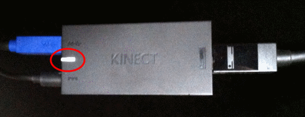

Kinect 2 for Windows Demo App
The Hands On Labs to complete a sample application for Windows 8.1 and the Kinect 2 for Windows
Kinect 2 Hands On Labs
Welcome to the Kinect 2 Hands on Labs!
This series will show you how to build a Windows 8.1 store app which uses almost every feature of the Kinect 2. The lessons in this series work the best when completed in order.
You can download a master copy of the complete app and all labs and referenced libraries through the github links on the left.
Or if you know a bit about development with the Kinect 2 already, you can skip to a particular lab by navigating to it at the top of the page. The running codebase is available through a link at the bottom of each page, which is complete and runnable as if you have just finished that lab.
If you have any suggestions or would like to report any bugs, please leave some feedback on the Kinect Tutorial GitHub Issues page.
Enjoy the labs and have fun!

System Requirements
The target application is a Windows 8.1 Store application for x64 machines (not ARM or x86) so a machine with an x64 architecture is required for development. Supported Operating Systems and Architectures
- Windows 8.1
- Microsoft Visual Studio® 2013 Community Edition with Update 2 or higher.
- Microsoft .NET Framework 4.5.
- The Kinect 2 SDK (Currently at build 1409)
- Kinect 2.0 for Windows device.
- USB 3.0
Debugging
Debugging the Kinect 2 requires that you meet the system requirements.
If you are unsure that the Kinect is plugged in properly, you can check a light indicator on the power box of the unit (the box which comes from the single cable in the Kinect 2)
and results in power and USB 3.0 connections.

- If the light on the power-box is Orange then something is wrong with either the power, Kinect 2, or USB3.0 connection.
- If the light is White then the Kinect is correctly registered with windows as a device to be used.